BrunoGUI GenII Help
BrunoGUI is a chess interface: you play against an engine (Stockfish by default, from 1320 to over 3000 Elo) or against a friend, and you analyze your games as with ChessBase.
1. Quick start
- Menu Stockfish > New game against Stockfish: choose your color, the engine strength and the clock, then OK.
- Play by clicking a piece, then its destination square. The possible squares are marked.
- The engine replies by itself. Its moves are written on the score sheet, to the right of the board.
- At the end, click Quick analysis under the score sheet: the engine judges every move and gives your accuracy.
- Menu File > Save game to keep the game in PGN format.
2. The main window
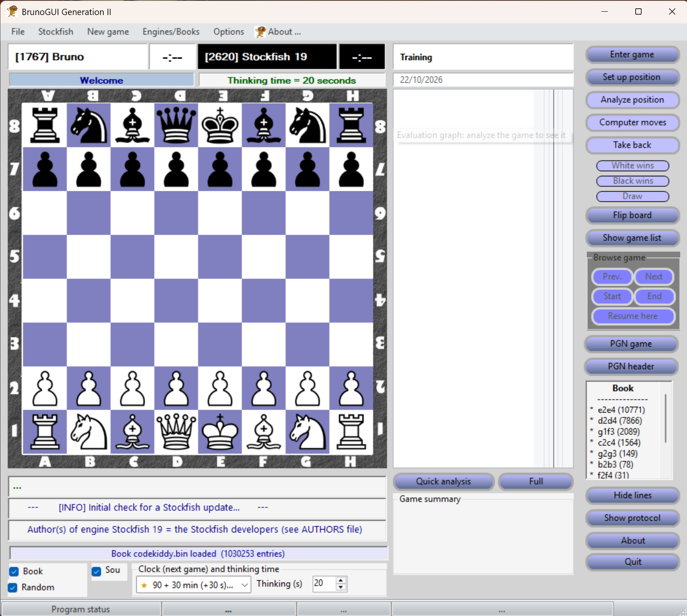
- At the top: the players (“[Elo] Name”) and their clocks.
- In the center: the board. The from and to squares of the engine's last move are colored.
- Right of the board: the event, the score sheet with its evaluation graph, then the “Game summary” box and the analysis buttons.
- Far right: the game buttons (Take back, result, Flip board, Computer moves…) and the moves known by the opening book.
- Under the board: three lines for the engine's lines or the analysis of the move being viewed, the clock and thinking time settings, then the status bar.
3. Playing a game
Against Stockfish
Menu Stockfish > New game against Stockfish. Nothing changes until you click OK: Cancel leaves the current game untouched.
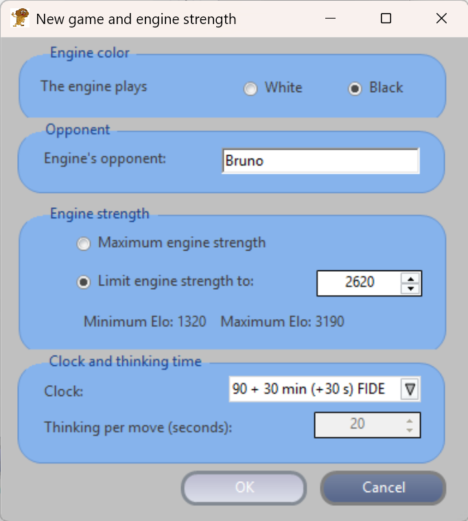
Against another engine, or between humans
- Menu New game: Human vs computer (you have White), Computer vs human (you have Black), or Between humans: the engine does not play, for a game between friends or to enter a game (also with the Enter game button).
- The engine used is the one chosen in the Engines/Books menu (see chapter 11).
During the game
- Take back cancels the last half-move. If it is then the engine's turn, the board waits: click Take back again to return to your move, or Computer moves.
- Computer moves makes the engine play in the current position: it takes the side to move, you the other side.
- Promotion: when a pawn reaches the last rank, choose the piece in the box that appears.
- Flip board shows the board from Black's side, or White's.
- End of the game: checkmate, stalemate, threefold repetition, the 50-move rule and insufficient material are detected automatically. The White wins, Black wins and Draw buttons declare a resignation or a draw by agreement.
- A finished game can be resumed: Take back cancels the last move and clears the result.
4. The clock
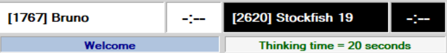
- The time control is chosen in the list under the board, or in the new game window. It applies to the next game.
- The official FIDE time controls (3 min + 2 s, 15 min + 10 s, 90 + 30 min) are marked with a golden star. “KO” means no increment per move.
- The clock starts at the first move. Clicking a clock pauses the game, another click resumes it.
- The side that runs out of time loses, unless the opponent can no longer mate (draw). The engine can lose on time too.
- Without a clock, the engine thinks for the number of seconds set in “Thinking (s)”.
- The time left after each move is saved in the PGN file.
5. The score sheet
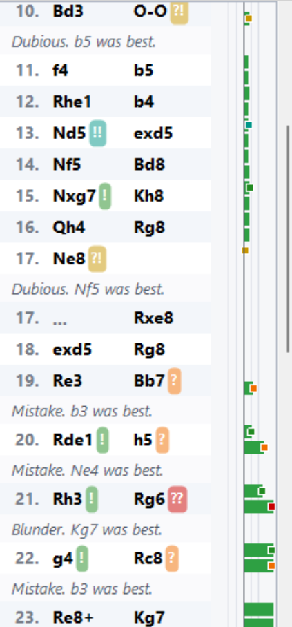
- Clicking a move shows the position after that move, without changing the game (the engine can keep playing). The End button (or the End key, or a click on the last move) returns to the game; while browsing, the board does not react to clicks.
- The Start, Prev., Next, End buttons and the keyboard let you browse the game:
| Key | Effect |
|---|---|
| ← / → | Previous / next half-move |
| Home or Page Up | Starting position |
| End or Page Down | Back to the game |
| Esc | Turns these keys off (to type text elsewhere) |
- Resume here resumes the game from the displayed position: the following moves are deleted. A game loaded from a PGN file thus becomes a training game against the engine.
- An arrow on the board shows the move being viewed; on an annotated move, a green arrow shows the best move. Under the board, an annotated move is also written in the color of its annotation (orange for “?”, for example).
6. Annotations
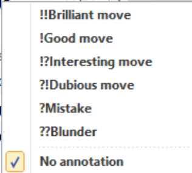
- Right-click a move to give it an annotation: !! (brilliant), ! (good), !? (interesting), ?! (dubious), ? (mistake), ?? (blunder).
- The annotation is shown on a colored badge and saved in the PGN file.
- Annotations suggested by the game analysis are paler. Yours are never replaced. A new analysis first clears the whole previous analysis (evaluations, best moves, suggested annotations, analysis comments), including the one of a loaded PGN file; your annotations and comments stay.
7. Analyzing a position
The Analyze position button makes the engine think about the displayed position (the game's, or the one you are viewing on the score sheet) for the “Thinking (s)” time. Meanwhile, a small progress window shows the position being analyzed, the score and best continuation as the engine thinks, and the time left; its Stop button gives the result found so far right away.
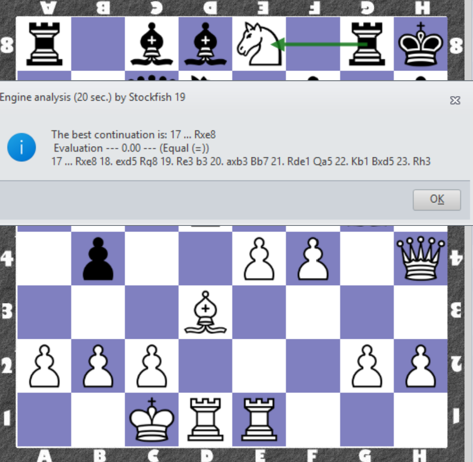
- Evaluations are always from White's point of view: +1.50 = White is ahead by one and a half pawns, “M3” = White mates in 3.
- The verdict uses the symbols of chess books: = equal (under 0.30), ⩲ / ⩱ slight advantage (0.30 to 0.70), ± / ∓ advantage (0.70 to 2.00), +- / -+ winning (2.00 and more).
- The analysis is always done at full strength, even if the engine is set weaker for playing.
- During the analysis, the clock stops.
8. Analyzing a game
Under the score sheet, two buttons analyze the whole game:
- Quick analysis: the engine examines each position for 10 seconds (adjustable), from the end of the game to the start, as ChessBase does.
- Full: in addition, the positions around each doubtful move, and each “!” or “!!”, are checked again for 30 seconds (adjustable) to confirm the verdict.
- Both durations are set in the Options > Game analysis durations menu (1 to 600 seconds per position); they are kept for next time. They are maximums: the engine stops as soon as it reaches depth 20 (24 for the check of the full analysis, 12 for opening theory), which is often much sooner in simple positions.
During the analysis, a small window shows the position being examined, the engine's score and best line as it thinks, and the time left. Its Stop button, like the one under the score sheet, stops the analysis and keeps what has been done; closing the window does not stop it. Hover over the analysis buttons to see the estimated duration.
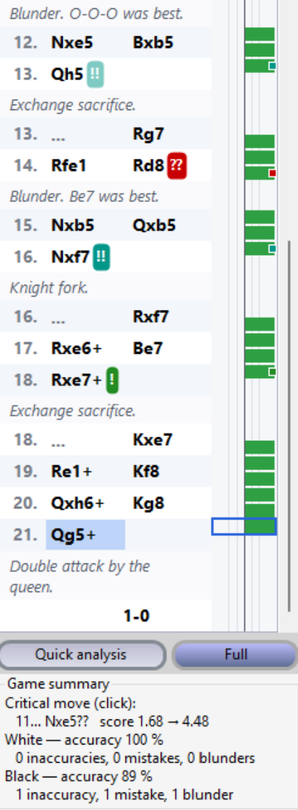
The summary
- The critical move is where the game turned: a click on the summary shows it.
- For each side: the accuracy in % (100 % = all moves as good as the engine's) and the number of inaccuracies (?!), mistakes (?) and blunders (??).
- A “!” marks a sound sacrifice (material given up, or left en prise even if the opponent declines it), or the only good move when it was hard to find (a second Stockfish, starting from scratch, only picks it after searching deep); a “!!” a sound sacrifice that was hard to find. A natural only move (a recapture, castling…) gets no “!”. The sacrifice is named after the move: “Knight sacrifice”, “Exchange sacrifice”… When the evaluation changes level, the move that changes it gets a comment: “White is better”, “Black is winning”, “Equal”, “White mates in 3”; the move that leads to an endgame names it: “Rook endgame”, “Opposite-colored bishops endgame”…; a move that lets a forced mate slip is flagged: “Missed mate in 8”; and the full analysis explains why a tempting capture was not played: “The rook on g6 cannot be taken: 22. Bxg6? fxg6 23. g4 Rc8 (-3.30)”; this text is also written to the saved PGN file.
- Tactical themes, on the best move played: a double attack that wins at least a piece in the engine line (the piece played attacks two targets, then takes one of them): “Knight fork”, “Double attack by the queen”…; a sacrifice that takes a pawn in front of the castled king: “Knight sacrifice: tears open the castled king's shelter”.
- The full analysis also points out threats: what the player would play next if the opponent did nothing (a second Stockfish looks for it). Only a concrete, serious threat is noted, a capture, a check or a mate that would win at least a piece: “Threat: 15. Nxe7+”, “Threatens mate in 3: 26... Nd3+”. The reply is commented “Parries the threat” when it was the only good move, and “Does not parry the threat” when it lets it through. A mistake (? or ??) does not announce a threat: it gives its refutation, the opponent's move that punishes it (“Refutation: 27... Bxf3”).
- The opening is named at the last move that leads to it, with its ECO code: “Sicilian Defense: Najdorf Variation (B90)” (Lichess opening table, public domain); it is recognized by the position, even when reached through another move order. The first move that is no longer in the loaded opening book is marked “Out of book”. The ECO code is also written to the [ECO] tag of the saved PGN file, if it is empty. While browsing, even without an analysis, the opening name is shown after the move being viewed, on the first line below the board, from Black's first move until the game leaves the book.
The evaluation graph
Comments in the score sheet. After the analysis, the essentials are written in the score sheet, in grey, under the move concerned: a mistake and the move that should have been played (“Bad. Nc4 was better.”, “Blunder. Qc6 was called for.”: the wording varies from move to move), a sacrifice or a tactical theme (“Knight sacrifice: tears open the castled king's shelter.”), a missed mate. When the engine disagrees with an annotation by the file's author (a “?” on a move it considers good), the sheet says so: “The engine considers this move sound.”. After a commented White move, Black's move continues on the next line. Clicking a comment shows its move; the details (evaluations, threats, assessment) stay on the lines below the board.
Right of the moves, one bar per half-move: green to the right when White is better, red to the left when Black is better, yellow for a mate. A click on a bar shows the move.
Details of a move
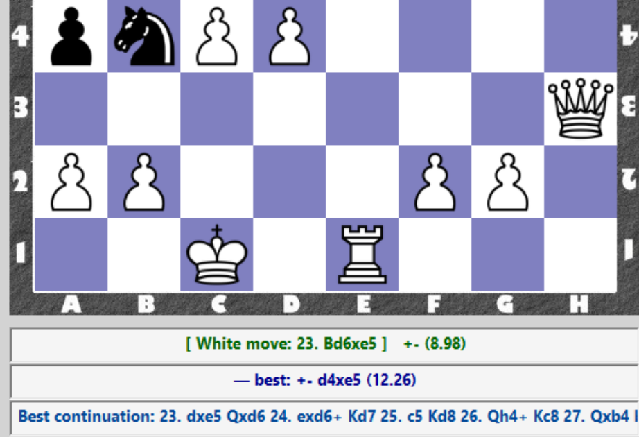
A move known by the loaded opening book is shown as “book move”: theory is not judged, so the analysis neither annotates it nor counts it in the summary (the engine line stays on the third line).
Clicking the best continuation line (the 3rd line, the cursor becomes a hand) replays it on the board, one move per second with its arrow, then returns to the move being viewed. Another click stops it.
9. PGN and FEN files
Opening games
Menu File > Open PGN file: the list of the games in the file is shown. Double-click a game to load it.
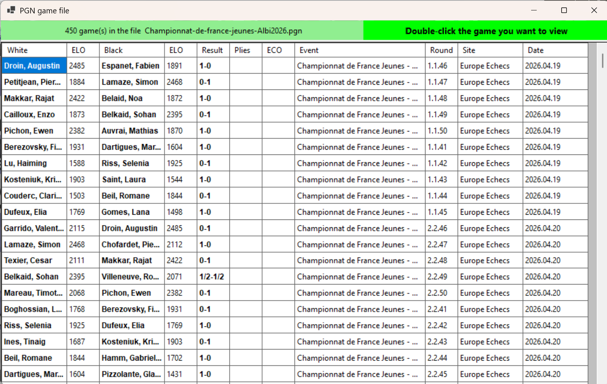
- A loaded game is read-only: you can browse and analyze it. Its comments, annotations, evaluations and times are kept.
- To play on from a position, use Resume here.
- The Show game list button reopens the list.
- Menu File > Open FEN file: loads a position; you play the side to move.
Saving
- File > Save game: the game in PGN format. If the file exists, you can append the game at the end or replace the file.
- File > Save position: the position in FEN format.
- The PGN header button edits the game information (event, site, date, players, Elo, time control).
- The PGN game button shows the game in English or French PGN, in long algebraic notation, in UCI or in FEN; “Annotated PGN” shows it as it will be saved, with the annotations, the analysis comments and variations, the evaluations and the clock times.
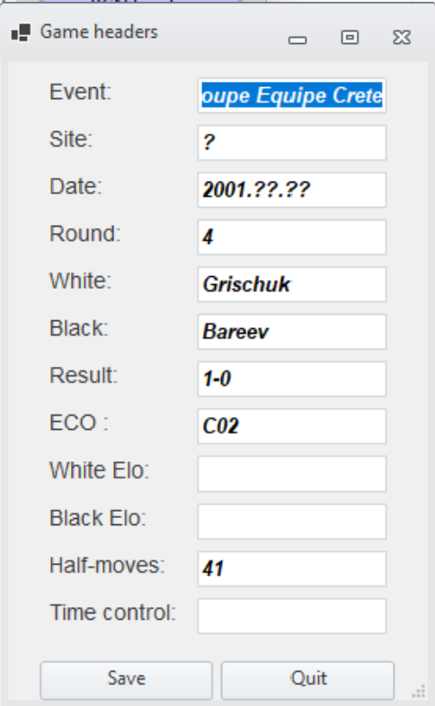
10. Setting up a position
The Set up position button opens a board where you place the pieces by hand, starting from the displayed position.
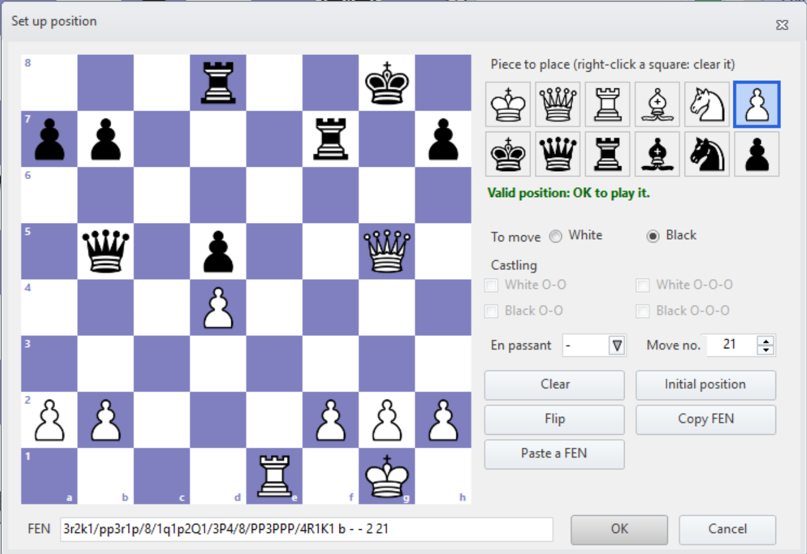
- Left click: places the chosen piece (or removes it if it is already there). Right click: clears the square.
- Set the side to move, castling rights, en passant square and move number.
- Paste a FEN starts from a position copied elsewhere; Copy FEN copies the position you set up.
- OK is accepted only if the position can be played: it becomes a new game, you play the side to move.
11. Engines and books
- Stockfish is the default engine, one of the strongest in the world. Rodent IV (strong and versatile) and Sargon I (the first engine on a microcomputer, 1978) are provided in the Engines/Books menu.
- Select an engine: any other engine using the UCI protocol.
- The chosen engine is only used to play against you. Analyses (position analysis, quick or full game analysis) are always done by Stockfish, started separately, with your settings for lines, threads and hash table: you can play against Rodent IV or Sargon and still get a good analysis.
- Select an opening book: a Polyglot opening book (*.bin). Specialized books are provided to study an opening.
- Right of the board, the list of the moves known by the book; ⭐ marks the one the engine played. The Book and Random boxes turn the book on and make the engine pick a move at random, to vary the openings.
- Stockfish > Basic settings / Advanced settings: engine settings (strength, number of lines, threads, hash table…). They are optional.
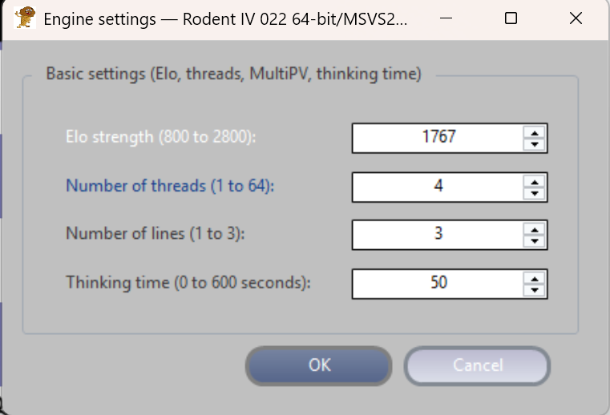
12. Options and language
- Options > Customize: the colors of the light and dark squares.
- Options > Language: French or English. The program offers to restart to apply the choice.
- The Sound box plays a sound when the engine moves.
- Hide lines hides the engine lines under the board; Show protocol shows the exchanges with the engine (for the curious).
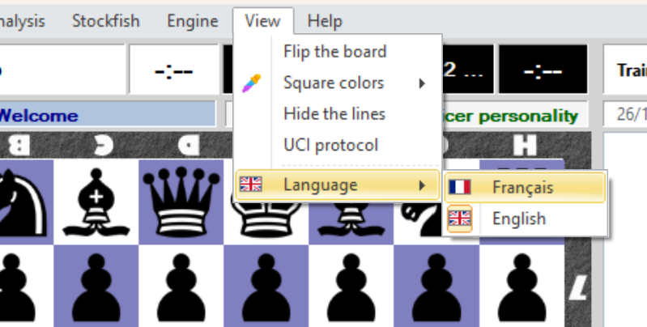
13. Updates and program files
- Installation: BrunoGUI is published as a zip archive, with no installer. Before extracting it, right-click the zip > Properties > tick “Unblock”. Otherwise, on first launch, Windows shows “Windows protected your PC” (SmartScreen): click “More info” if needed, then “Run anyway”. This warning comes from the program, which is free, not being digitally signed; it does not indicate a problem with the program.
- Stockfish update: the program checks from time to time whether a new version exists and offers to install it. Menu Stockfish > Check for Stockfish update to check right away.
- BrunoGUI.ini, next to the program: the default settings (engine, colors, palette…).
- BrunoGUI.preferences.ini: your preferences, saved when the program closes (colors, name, thinking time, language…). Delete it to go back to the default settings.
- BrunoGUI.log: the error log. If a problem occurs, this file helps to fix it.